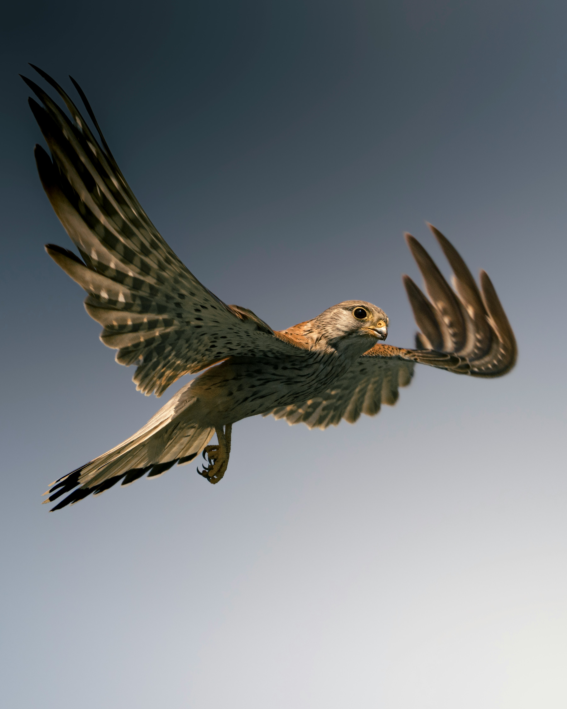
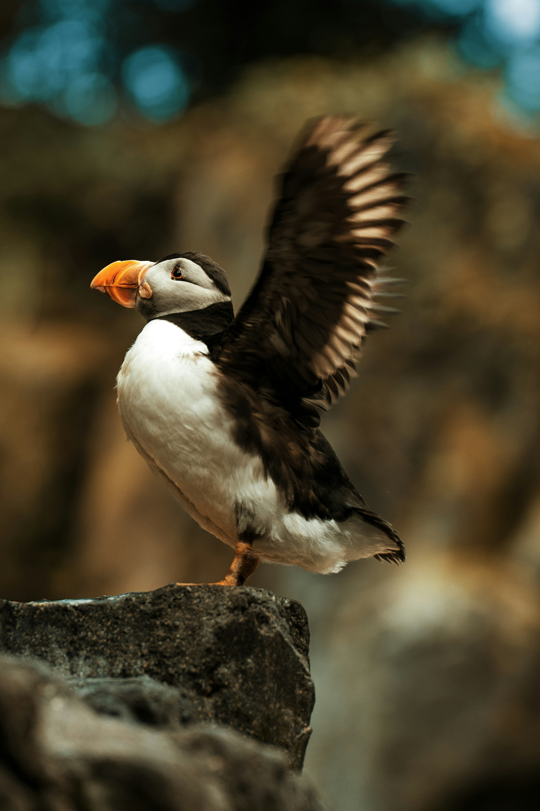

Page 3: Birds (Flexbox Layout)
1. Kestrel Falcon

Kestrels are small birds of prey in the falcon family known for their remarkable hovering flight technique while hunting small rodents and insects. They possess keen eyesight that allows them to spot prey from high altitudes before swooping down with precision.
Learn more on Wikipedia.
2. Atlantic Puffin

Atlantic Puffins are sea birds easily recognized by their colorful, parrot-like beaks during breeding season. Excellent swimmers that catch fish by diving underwater, they spend most of their lives out at sea before nesting in coastal cliff burrows.
Learn more on Wikipedia.